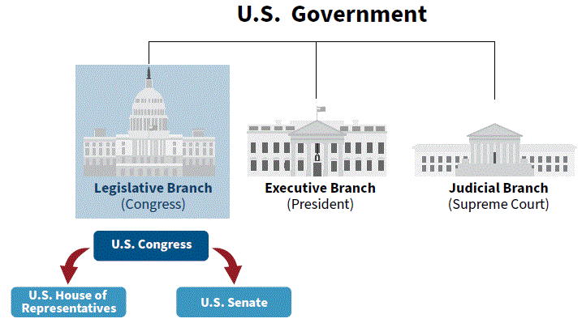
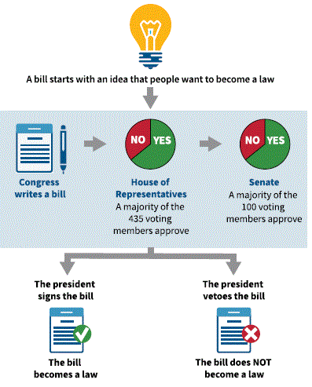

[p18]
In this chapter, you will learn about:
The Legislative Branch is one branch or part of the government. Another name for the Legislative Branch is the U.S. Congress.
The Constitution says that Congress makes federal laws. When the Founders were writing the Constitution, they believed that the power to make laws is the most important power in government. This is why the first section of the Constitution describes Congress and the power to make federal laws.
During the Constitutional Convention, the Founders agreed that the people who make laws should represent the states or parts of states where they lived.
When the Constitutional Convention started, the Founders did not agree on how many representatives each state should have in Congress. Some people thought that the number of representatives from each state should be based on the number of people living in the state. Others thought that each state should have the same number of representatives, no matter how many people lived in the state. They came to an agreement to have two parts to the U.S. Congress. The two parts to the U.S. Congress are the House of Representatives and the Senate.
States that have more people have more representatives in the House of Representatives, and every state in the United States has two U.S. Senators.
[Diagram: U.S. Government — Legislative Branch (Congress), Executive Branch (President), Judicial Branch (Supreme Court); U.S. Congress divides into U.S. House of Representatives and U.S. Senate]
[p18]
En este capítulo, aprenderá sobre:
La Rama Legislativa es una rama o parte del gobierno. Otro nombre para la Rama Legislativa es el Congreso de los Estados Unidos.
La Constitución dice que el Congreso hace las leyes federales. Cuando los Fundadores estaban escribiendo la Constitución, creían que el poder de hacer leyes es el poder más importante del gobierno. Es por eso que la primera sección de la Constitución describe al Congreso y el poder de hacer leyes federales.
Durante la Convención Constitucional, los Fundadores acordaron que las personas que hacen las leyes deben representar a los estados o partes de los estados donde vivían.
Cuando comenzó la Convención Constitucional, los Fundadores no estaban de acuerdo sobre cuántos representantes debería tener cada estado en el Congreso. Algunas personas pensaban que el número de representantes de cada estado debería basarse en el número de personas que vivían en el estado. Otros pensaban que cada estado debería tener el mismo número de representantes, sin importar cuántas personas vivieran en el estado. Llegaron a un acuerdo para tener dos partes en el Congreso de los Estados Unidos. Las dos partes del Congreso de los Estados Unidos son la Cámara de Representantes y el Senado.
Los estados que tienen más personas tienen más representantes en la Cámara de Representantes, y cada estado de los Estados Unidos tiene dos Senadores de los Estados Unidos.
[Diagrama: Gobierno de los Estados Unidos — Rama Legislativa (Congreso), Rama Ejecutiva (Presidente), Rama Judicial (Corte Suprema); el Congreso se divide en la Cámara de Representantes y el Senado]
[p19]
There are 435 voting members in the House of Representatives.
Each state is divided into congressional districts. The 435 voting members of the House of Representatives come from congressional districts from each of the 50 states. Each congressional district elects a person to serve as a representative in the House of Representatives.
Some states have more representatives in the House of Representatives than others.
This is because states that have more people have more representatives in the House of Representatives.
Example:
California:
Wyoming:
[Map of the United States showing House of Representatives voting members: Wyoming 1 voting member, California 52 voting members]
[p19]
Hay 435 miembros con derecho a voto en la Cámara de Representantes.
Cada estado está dividido en distritos congresionales. Los 435 miembros con derecho a voto de la Cámara de Representantes provienen de distritos congresionales de cada uno de los 50 estados. Cada distrito congresional elige a una persona para servir como representante en la Cámara de Representantes.
Algunos estados tienen más representantes en la Cámara de Representantes que otros.
Esto se debe a que los estados que tienen más personas tienen más representantes en la Cámara de Representantes.
Ejemplo:
California:
Wyoming:
[Mapa de los Estados Unidos que muestra los miembros con derecho a voto de la Cámara de Representantes: Wyoming 1 miembro con derecho a voto, California 52 miembros con derecho a voto]
[p20]
Members of the House of Representatives are elected every two years.
To get elected to the House of Representatives, a person must be at least 25 years of age and live in the state where the congressional district is located.
One right that is only for U.S. citizens is to run for federal office. This means that a person must be a U.S. citizen to get elected to the House of Representatives.
To find the name of your Representative for your congressional district please visit: house.gov.
[Photo: The United States Capitol in Washington, D.C., is the meeting place of the nation's legislature, the U.S. Congress.]
[p20]
Los miembros de la Cámara de Representantes son elegidos cada dos años.
Para ser elegido a la Cámara de Representantes, una persona debe tener al menos 25 años de edad y vivir en el estado donde se encuentra el distrito congresional.
Un derecho que es solo para los ciudadanos de los Estados Unidos es postularse para un cargo federal. Esto significa que una persona debe ser ciudadana de los Estados Unidos para ser elegida a la Cámara de Representantes.
Para encontrar el nombre de su Representante para su distrito congresional, visite: house.gov.
[Foto: El Capitolio de los Estados Unidos en Washington, D.C., es el lugar de reunión de la legislatura de la nación, el Congreso de los Estados Unidos.]
The leader of the House of Representatives is called the Speaker of the House.
To find the name of the current Speaker of the House, please visit: speaker.gov.
El líder de la Cámara de Representantes se llama el Presidente de la Cámara.
Para encontrar el nombre del actual Presidente de la Cámara, visite: speaker.gov.
There are 100 U.S. Senators in the Senate. Senators represent all the people of a state.
Each state has two U.S. Senators.
Example:
[Map of the United States highlighting Wyoming and California, both with two U.S. Senators]
Hay 100 Senadores de los Estados Unidos en el Senado. Los senadores representan a todas las personas de un estado.
Cada estado tiene dos Senadores de los Estados Unidos.
Ejemplo:
[Mapa de los Estados Unidos que destaca Wyoming y California, ambos con dos Senadores de los Estados Unidos]
[p20]
U.S. Senators are elected for six years.
To get elected to the Senate, a person must be at least 30 years of age and they must live in the state that they represent.
One right that is only for U.S. citizens is to run for federal office. This means that a person must be a U.S. citizen to get elected to the Senate.
To find the name of your U.S. Senators, please visit: senate.gov.
Washington, D.C., does not have any senators because it is not a U.S. state. Washington, D.C., residents should answer that D.C. does not have a senator.
[p20]
Los Senadores de los Estados Unidos son elegidos por seis años.
Para ser elegido al Senado, una persona debe tener al menos 30 años de edad y debe vivir en el estado que representa.
Un derecho que es solo para los ciudadanos de los Estados Unidos es postularse para un cargo federal. Esto significa que una persona debe ser ciudadana de los Estados Unidos para ser elegida al Senado.
Para encontrar el nombre de sus Senadores de los Estados Unidos, visite: senate.gov.
Washington, D.C., no tiene senadores porque no es un estado de los Estados Unidos. Los residentes de Washington, D.C., deben responder que D.C. no tiene senador.
[p21]
[Diagram: U.S. Congress — Two Parts. Left: U.S. House of Representatives — 435 U.S. Representatives, the number of representatives for a state depends on the number of people that live there, Represent a district, 2-year terms for U.S. Representatives. Right: U.S. Senate — 100 U.S. Senators, Each state has two senators, Represent all of the people of a state, 6-year terms for U.S. Senators.]
[p21]
[Diagrama: Congreso de los Estados Unidos — Dos Partes. Izquierda: Cámara de Representantes — 435 Representantes, el número de representantes de un estado depende del número de personas que viven allí, Representan un distrito, períodos de 2 años. Derecha: Senado de los Estados Unidos — 100 Senadores, cada estado tiene dos senadores, Representan a todas las personas de un estado, períodos de 6 años.]
[p22]
The Constitution says that Congress makes federal laws. A "law" is another word for a "rule" that people must follow. A "federal law" is another word for a "rule" that everyone in the United States must follow.
When members of Congress want to make a new law, they write a "bill." A bill is a proposal for a new law. For Congress to pass a bill, a majority of both the House of Representatives and the Senate must vote for it. This means that more than half of the voting members in the House of Representatives and U.S. Senators must vote in support of the bill.
For example, there are 435 voting members in the House of Representatives. For a bill to pass the House of Representatives, 218 members (or the majority of those voting and present) must vote in favor of the bill.
There are 100 U.S. Senators in the Senate. For most bills to pass the Senate, 51 U.S. Senators (or the majority of those voting and present) must vote in favor of it.
If both parts of Congress pass the bill, then the bill is sent to the President of the United States.
If the President agrees with the bill, then the President signs the bill into law. This means that everyone in the country must follow the law that the President signed.
If the President does not agree with the bill, then the President vetoes the bill. The word "veto" means that the President did not sign the bill. Then the bill does not become a law unless Congress votes to override the veto.
[Diagram: How Congress Makes a Federal Law — A bill starts with an idea that people want to become a law → Congress writes a bill → House of Representatives: a majority of the 435 voting members approve → Senate: a majority of the 100 voting members approve → The president signs the bill → The bill becomes a law. OR: The president vetoes the bill → The bill does NOT become a law.]
[Photo: The Oval Office of the White House. Photo by Cecil Stoughton. Courtesy of the John F. Kennedy Presidential Library and Museum.]
[p22]
La Constitución dice que el Congreso hace las leyes federales. Una "ley" es otra palabra para una "regla" que las personas deben seguir. Una "ley federal" es otra palabra para una "regla" que todos en los Estados Unidos deben seguir.
Cuando los miembros del Congreso quieren hacer una nueva ley, escriben un "proyecto de ley". Un proyecto de ley es una propuesta para una nueva ley. Para que el Congreso apruebe un proyecto de ley, la mayoría de la Cámara de Representantes y del Senado deben votar a favor. Esto significa que más de la mitad de los miembros con derecho a voto de la Cámara de Representantes y los Senadores de los Estados Unidos deben votar a favor del proyecto de ley.
Por ejemplo, hay 435 miembros con derecho a voto en la Cámara de Representantes. Para que un proyecto de ley sea aprobado por la Cámara de Representantes, 218 miembros (o la mayoría de los que votan y están presentes) deben votar a favor del proyecto de ley.
Hay 100 Senadores de los Estados Unidos en el Senado. Para que la mayoría de los proyectos de ley sean aprobados por el Senado, 51 Senadores de los Estados Unidos (o la mayoría de los que votan y están presentes) deben votar a favor.
Si ambas partes del Congreso aprueban el proyecto de ley, entonces el proyecto de ley se envía al Presidente de los Estados Unidos.
Si el Presidente está de acuerdo con el proyecto de ley, entonces el Presidente firma el proyecto de ley y se convierte en ley. Esto significa que todos en el país deben seguir la ley que el Presidente firmó.
Si el Presidente no está de acuerdo con el proyecto de ley, entonces el Presidente veta el proyecto de ley. La palabra "veto" significa que el Presidente no firmó el proyecto de ley. Entonces el proyecto de ley no se convierte en ley a menos que el Congreso vote para anular el veto.
[Diagrama: Cómo el Congreso hace una ley federal — Un proyecto de ley comienza con una idea que las personas quieren que se convierta en ley → El Congreso escribe un proyecto de ley → Cámara de Representantes: la mayoría de los 435 miembros con derecho a voto aprueban → Senado: la mayoría de los 100 miembros con derecho a voto aprueban → El presidente firma el proyecto de ley → El proyecto de ley se convierte en ley. O: El presidente veta el proyecto de ley → El proyecto de ley NO se convierte en ley.]
[Foto: La Oficina Oval de la Casa Blanca. Foto de Cecil Stoughton. Cortesía de la Biblioteca y Museo Presidencial John F. Kennedy.]